Yet Another Org-mode Presentation Script
IBM Research 体験談
Made by guicho2.71828 (Masataro Asai)
1 概要
岸本先生およびAdi と研究をしてきました
渡航先: アイルランド
渡航機関: 7/26-11/4
契約期間: 8/1-10/31
実際の契約期間: 8/2-10/28
実際の活動期間: 8/20-10/28
2 アイルランド
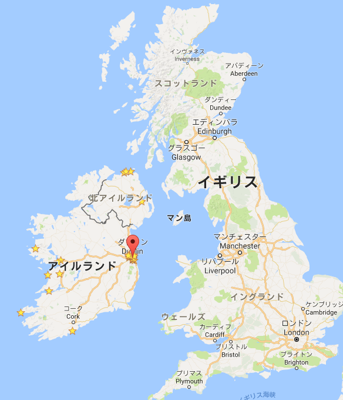
- EU加盟国
- 法人税回避のためIT企業が集結
- 「ダブルアイリッシュ・ダッチサンドイッチ」
- 気候: 冷涼,にわか雨↔曇りの繰り返し,太陽低い,≈イギリス
- 人の性格: 大雑把
3 申し込みの流れ
- ? : メンター(例:岸本先生)がインターンシップの計画を作り会社に提出
- 2015/6 : 知り合った人にポスト無いかどうか尋ねておく (事前に根回し)
- 2015/12 : 応募の掲示
- 2016/3: 応募の最終期限 ただし埋まり次第決定
- 2015/12: その企業の Job Opportunity ウェブサイトから登録
- 何段階かの審査を経る(二ヶ月ぐらいかかる)
- 審査を通ると、自分の名前、経歴等が社内のどこかに掲示されるらしい
- メンターが気に入った人を選ぶ — 根回しがここで効く。ただし採用されるかは不明
- 2016/2: 最終面接 (国際電話)
4 採用後の流れ
- Visa関連 – 日本人はアイルランド入国に関しVISAはいらない
- Hosting Agreement – 就労許可を得るためのEU/アイルランドのシステムの1つ。
- 国際郵便がロストしたので直前に送り直しなど
- 契約書
- 郵送+メール
- 国内手続き
5 国内手続き
- 国内(JSPS) = ヤクザの親分
- 多数の手続きを設けることで国際化を妨害
- 3ヶ月以上の海外渡航を認めない
- →本来4ヶ月のインターンを短縮することに
- 国内(大学)
- 契約書を二週間で返信しないといけない
- 来月の教授会まで待て? 今日やれ今日
- confidentialな契約書の内容を見せろ?
- 国内(学科) (略)
- 結論: センスの悪い人間/技術/組織と関わりを持つのは時間の無駄
- 結論: Lisp で書け
6 準備(持ち物): アウトドア/ノマド生活を基本に。
- 夏服、冬服
- 調理器具 ← アウトドア用の食器がおすすめ。コンパクトにフライパン、鍋、皿を収納
- 調味料 ← めんつゆ, わさび
- プログラミング環境。
- Hackers = Painters. 能力を最高に保つため 慣れ親しんだ道具を確保するのはプロの責務。
- キーボード ← プログラマにとって指と手は命。
- ディスプレイ ← 必ずセカンドディスプレイをもらえるとは考えない
- 工具 ← 最低限自分のノートパソコンを修理できるだけの工具
6.1 写真
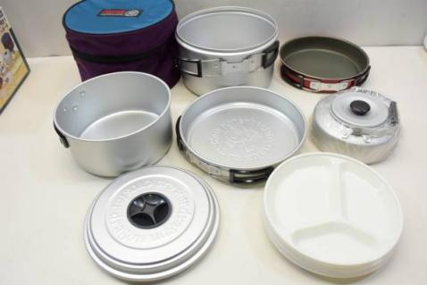
6.2 写真
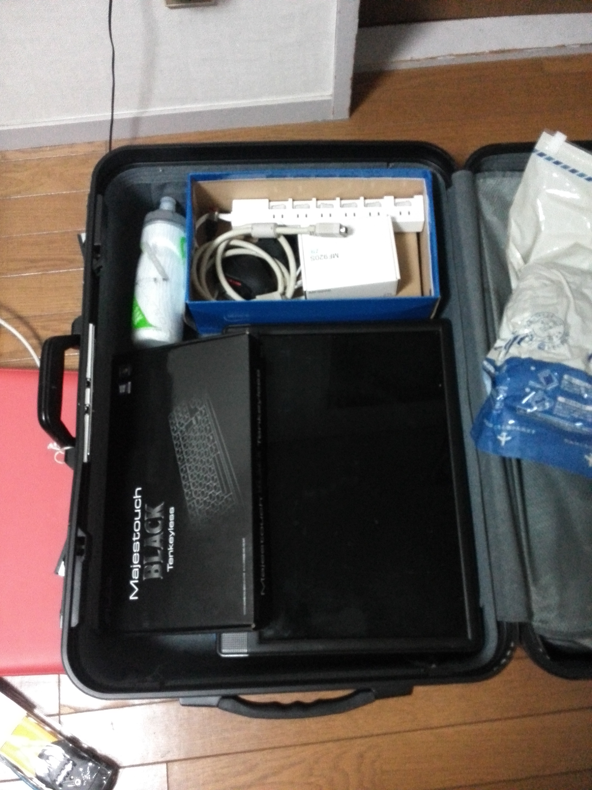
6.3 写真
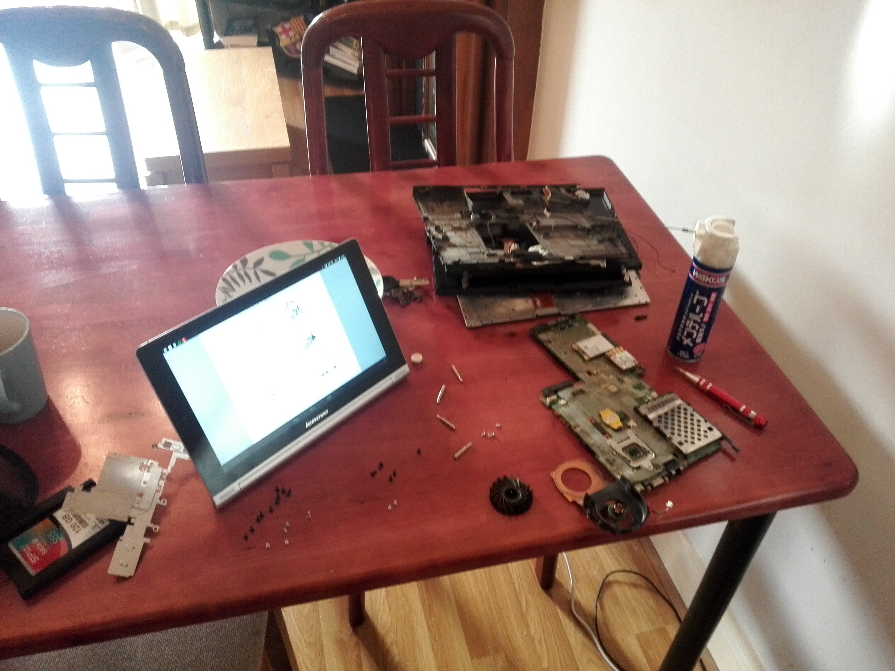
7 準備(住居): Airbnb 最高!!!
| 期間 | 場所 | Approx. JPY/day |
|---|---|---|
| 7/26-8/04 | 南ダブリン, Airbnb, 部屋の片隅のベッド | 4k |
| -9/4 | ダブリン市内, Daft.ie, 三人部屋二段ベッド上 | 1.3k (500EUR/month) |
| -10/31 | ダブリン郊外, Airbnb, 個室 | 2.4k (800EUR/month) |
| 11/1 | Galway, Airbnb, 個室 | 3.6k |
| 11/2 | Belfast UK, Airbnb, 個室 | 3.8k |
| 11/3 | Dublin, Airbnb, 個室 | 3.9k |
7.1 同居人
| 期間 | 場所 | ||
|---|---|---|---|
| 7/26-8/04 | 部屋の片隅のベッド | Venezuera | |
| German | |||
| Taiwan | |||
| -9/4 | 三人部屋二段ベッド上 | Spain | China |
| 9-10人で集団生活 | Italy | Brazil | |
| France | Russia | ||
| Libya | |||
| -10/31 | 個室 | Italy | Croatia |
| 3-4人で集団生活 | France | Estonia |
7.2 部屋 (ダブリン市内)

7.3 部屋 (ダブリン郊外)

7.4 部屋 (ダブリン郊外) Charlie
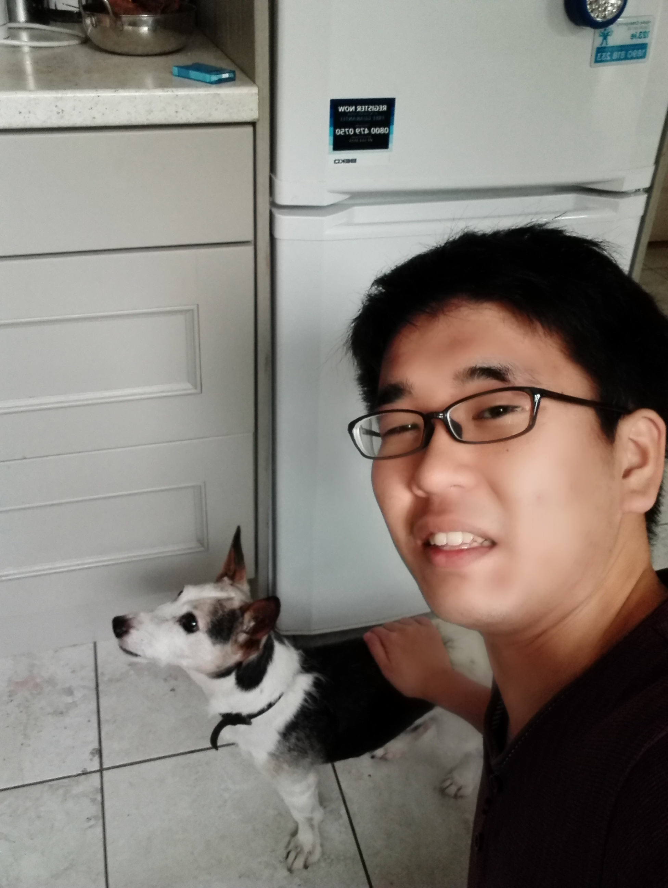
7.5 ルームメイト (ダブリン市内)
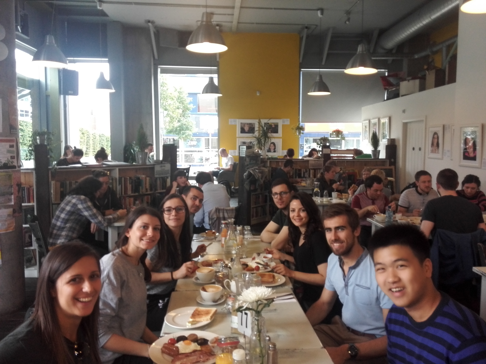
7.6 ルームメイト (ダブリン郊外)
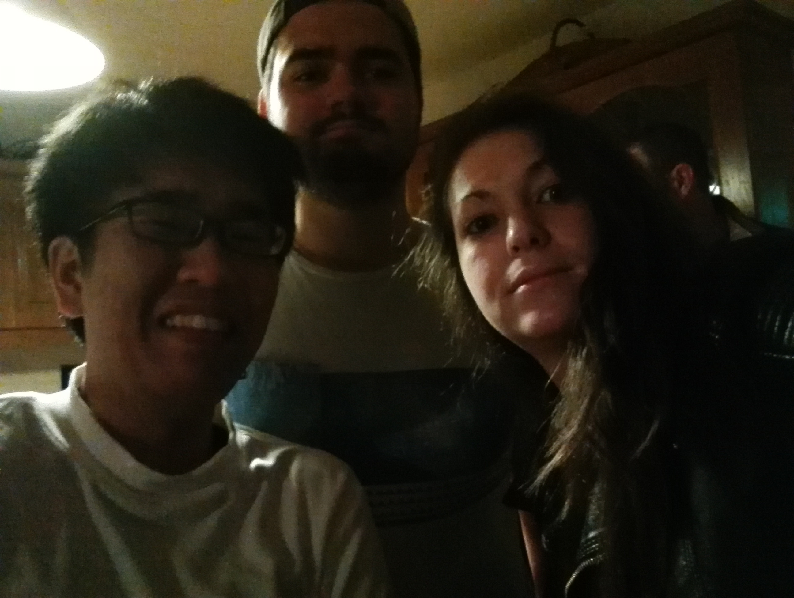
7.7 ルームメイト (ダブリン郊外)
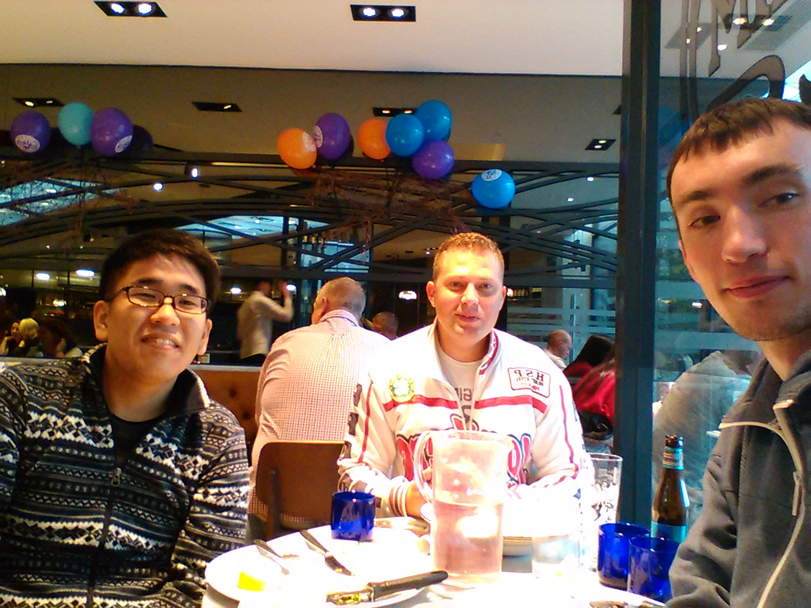
8 IBM Research Ireland
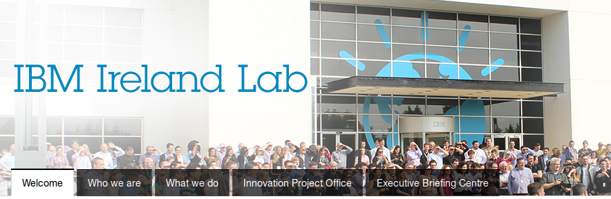
9 IBM Research Ireland
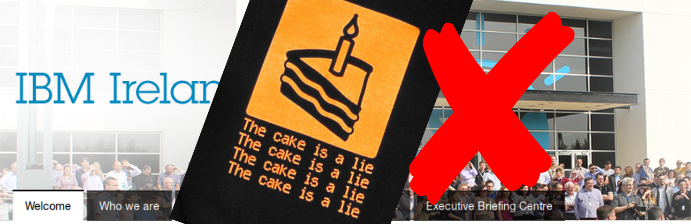
10 環境
食堂は不味い/2時に閉まる/売店なし/周囲に何もない
11 到着後
| 日時 | |
|---|---|
| 7/26 | 到着 |
| 7/29 | 移民登録 (350€ – 自費) |
| 8/2 | 始めてキャンパス内に |
| ~8/9 | ようやくイントラネットアカウント |
| ＝インターネットアクセス | |
| ＝apt-get で開発環境を構築 | |
| ~8/20 | ようやくサーバーアカウント |
| まともに開発できるようになる |
実質まともに開発できたのは二ヶ月ちょい
12 病的な既存コード
- テスト無し CI無し ドキュメント無し
- コードレビュー無し スタイル統一無し
- ビルドできない古い無数のサブプロジェクト, それらのためだけの関数
- 不適切なクラス構造, switch 文, 不適切なメソッド名, もはや呼ばれていない関数
- 手でJSON書き出し (しかも間違ってる)
- インスタンスをコピーするのにそのJSONに書き出して読み込む
まともなプロセス間APIを手に入れるためのリファクタリングに一ヶ月 (研究できず)
実質まともに研究できたのは一ヶ月 (他のチームはまともなコードなのに…)
13 救い
- 他のチームは もっと現代的な環境で開発してる
- 社内に github enterprise がある
- Travis-CI enterprise もある
- → 自分でCIをセットアップした
- → 自動テストも書いた
- → 古いコードは全部捨て
- → 残りをリファクタリング
14 給料
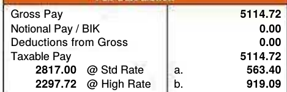
- 最初の1ヶ月:45% (Emergency Tax)
- 残り2ヶ月: 20%
- 月22万 - 住居8万 = 14万
- 交通費、食事…
- 航空券16万, 移民登録 3万5千
アイルランド固有の事情
- 統一賃金支払いシステム: PAYE Anytime
- PAYE Anytime の支払いはアイルランドの銀行のみ WTF
- 現地銀行口座を開設するまで給料を貰えない
- 現金を用意しておかないと一文無しに!
15 働きかた
出勤/退勤時間は自由
ただしバスは30分に一本しかありません
ミーティングなければ別に来なくてもいい
ただし超絶面倒くさいVPNのセットアップが必要
実際の働き方
時間がない!
平日: 持ち帰りで家で作業
土日: 早朝まで作業 朝4時ぐらいまで実験
→ 月曜のミーティングのために実験結果を準備etc.
16 まとめ: 海外インターンシップから何を得られるか
- 経歴、「箔」、 CV
- コネ — 知り合い
- 技術経験・・・メンターに依る。(自分は特に得るものはなかった)
- 教えてもらう ← 当然通用しない
- が、人の尻拭いをすることになるとは予想しなかった
- 自分が身に着けたい異分野技術を専門とするメンターと組むべきかも
- (ネガティブな)社会経験・・・得られるが、本来避けるべきもの (事務手続きの苦労など)
- 海外経験・・・移住の知識や多国籍文化。日常生活
- 論文 ・・・ 書けるが、大学と比べて効率は悪い